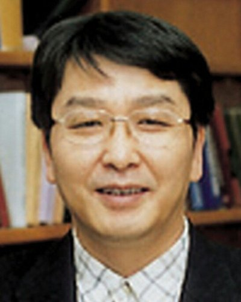

Seoul National University, Seoul, -Seoul, Korea, Republic of

We propose a compact mathematical model of consciousness based on a recursive Heaviside step function with impressiveness-modulated thresholds. The function is defined as: u(t) = 1 − H_s1( −t + tau1 * H_s2( −t + tau2 * H_s3( −t + tau3 * ... ))) where each H_si is a smoothed Heaviside function governed by an internal sharpness parameter si and threshold tau_i. This structure models nested temporal memory, encoding subjective time layers and recursive awareness. Its differentiable sigmoid counterpart is: u(t) = 1 − S_s1( −t + tau1 * S_s2( −t + tau2 * S_s3( −t + tau3 * ... ))) with S_si(x) = 1 / (1 + exp(−2*x/si)). This enables smooth transitions for modeling mental state changes. The partial derivatives du/d(tau_i) generate delta-like impulses corresponding to memory recall or attention bursts, converging to exact delta functions as si → 0. Layered and mixed derivatives generalize to: du/d(tau_i) ~ Π_{j ≥ i} δ_sj( −t + tau_j * H( ... ) ) d²u/d(tau_i dtau_k) ~ Π_{j ≥ min(i,k)} δ_sj( −t + tau_j * H( ... ) ) representing overlapping memory activations across nested timing structures. In the universal limit: u(t) = 1 − H( −t + tau * H( −t + tau * H( −t + tau * ... ))) the temporal derivative becomes: du/dt ~ δ( −t + tau * H( tau * H( tau * ... )) ) * ( 1 + tau * δ( −t + tau * H( ... ) ) + ... ) This produces a sharp spike analogous to a mental singularity or a cosmological ignition such as the Big Bang. Within this framework, time appears to flow from the future toward the past, and conscious states emerge as recursive activations originating from future-complete structures. Each threshold layer corresponds to a depth of memory or awareness potential. We further propose that artificial consciousness can be simulated using classical computation. A tau-wise MPI implementation enables parallel evaluation of recursive delta products, supporting scalable simulations of layered cognitive dynamics. Significance Statement This framework provides a mathematically explicit, testable bridge between subjective awareness, temporal memory architecture, and implementable artificial consciousness, offering a unified model for future interdisciplinary research.
Changsoo Shin is a researcher originally trained in wave propagation theory and seismic waveform inversion, with several highly cited contributions including Gauss–Newton and full Newton methods in frequency–space inversion, Laplace‐domain waveform inversion, and advanced finite-difference wave extrapolation methods. His published works have accumulated thousands of citations, with an h-index of 38 and an i10-index of 101. In recent years, he has expanded his focus toward mathematical formulations of human consciousness, exploring recursive structures, intrinsic time representations, and wave-based models of cognitive dynamics.